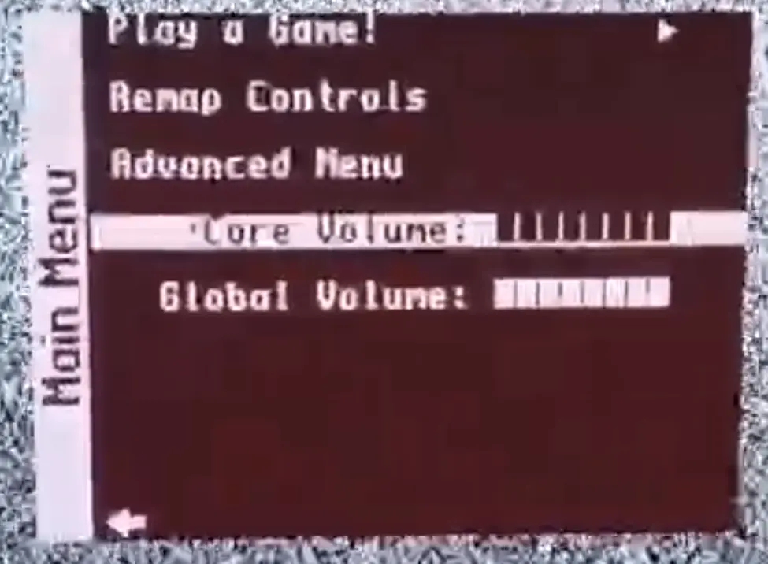

Product

An ergonomic console to play all your favorite retro games on the go, all emulated through hardware!
About
This project is from a group of 6 students from Instituto Superior Técnico (IST). They were challenged to do a project and decided to do one on a portable game console based on MiSTer FPGA for the curricular unit "Integrated Project in Electronics Engineering". The project is funded entirely by IST.
Planning
We are currently on Phase 3 of the project!
Blog
This is our latest post on the blog:
Custom Menu (04/06/2024):
[Miguel]
In an attempt to make our console more user friendly,
we thought of creating a custom menu
that would be more intuitive to use.
After analysing
MiSTer's main binary,
we found the file responsible for handling the menu
and altered it to achieve our goal.
